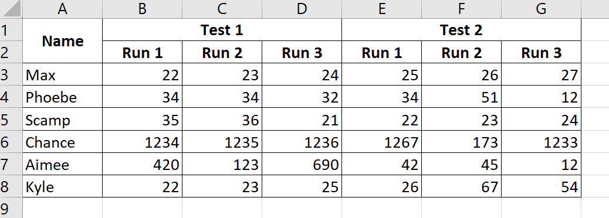

Recently I tried to important some Microsoft Excel data into R, and ran into an issue were the data actually had two different header rows. The top row listed a group, and then the second row listed a category within that group. Searching goggle I couldn’t really find a good example of what I was looking for, so I am putting it here in hopes of helping someone else!
I have created a small Excel file to demonstrate what I am talking about. Download it here. This is the data from Excel. 
First we will read the file in using the package readxl and view the data without doing anything special to it.
library(readxl) # load the readxl library
library(tidyverse) # load the tidyverse for manipulating the data
file_path <- "./content/post/2020-06-15-importing-excel-data-with-multiple-headers/example_data.xlsx" #set the file path
ds0 <- read_excel(file_path) # read the file
ds0 # A tibble: 7 x 7
Name `Test 1` ...3 ...4 `Test 2` ...6 ...7
<chr> <chr> <chr> <chr> <chr> <chr> <chr>
1 <NA> Run 1 Run 2 Run 3 Run 1 Run 2 Run 3
2 Max 22 23 24 25 26 27
3 Phoebe 34 34 32 34 51 12
4 Scamp 35 36 21 22 23 24
5 Chance 1234 1235 1236 1267 173 1233
6 Aimee 420 123 690 42 45 12
7 Kyle 22 23 25 26 67 54 First lets read back the data, this time however with some options. We will set the n_max equal to 2, to only read the first two rows, and set col_names to FALSE so we do not read the first row as headers.
ds1 <- read_excel(file_path, n_max = 2, col_names = FALSE)
ds1# A tibble: 2 x 7
...1 ...2 ...3 ...4 ...5 ...6 ...7
<chr> <chr> <chr> <chr> <chr> <chr> <chr>
1 Name Test 1 <NA> <NA> Test 2 <NA> <NA>
2 <NA> Run 1 Run 2 Run 3 Run 1 Run 2 Run 3Now that we have our headers lets first transpose them to a vertical matrix using the base function t(), then we will turn it back into a tibble to allow us to use tidyr fill function.
names <- ds1 %>%
t() %>% #transpose to a matrix
as_tibble() #back to tibble
names# A tibble: 7 x 2
V1 V2
<chr> <chr>
1 Name <NA>
2 Test 1 Run 1
3 <NA> Run 2
4 <NA> Run 3
5 Test 2 Run 1
6 <NA> Run 2
7 <NA> Run 3Note that tidyr fill can not work row wise, thus the need to flip the tibble so it is long vs wide.
Now we use tidyr fill function to fill the NA’s with whatever value it finds above.
names <- names %>% fill(V1) #use dplyr fill to fill in the NA's
names# A tibble: 7 x 2
V1 V2
<chr> <chr>
1 Name <NA>
2 Test 1 Run 1
3 Test 1 Run 2
4 Test 1 Run 3
5 Test 2 Run 1
6 Test 2 Run 2
7 Test 2 Run 3This is where my data differed from many of the examples I could find online. Because the second row is also a header we can not just get rid of them. We can solve this using paste() combined with dplyr mutate to form a new column that combines the first and second column.
names <- names %>%
mutate(
new_names = paste(V1,V2, sep = "_")
)
names# A tibble: 7 x 3
V1 V2 new_names
<chr> <chr> <chr>
1 Name <NA> Name_NA
2 Test 1 Run 1 Test 1_Run 1
3 Test 1 Run 2 Test 1_Run 2
4 Test 1 Run 3 Test 1_Run 3
5 Test 2 Run 1 Test 2_Run 1
6 Test 2 Run 2 Test 2_Run 2
7 Test 2 Run 3 Test 2_Run 3One more small clean up task, in the example data the first column header Name, did not have a second label, this has created a name with an NA attached. We can use stringr to remove this NA.
names <- names %>% mutate(across(new_names, ~str_remove_all(.,"_NA")))
names# A tibble: 7 x 3
V1 V2 new_names
<chr> <chr> <chr>
1 Name <NA> Name
2 Test 1 Run 1 Test 1_Run 1
3 Test 1 Run 2 Test 1_Run 2
4 Test 1 Run 3 Test 1_Run 3
5 Test 2 Run 1 Test 2_Run 1
6 Test 2 Run 2 Test 2_Run 2
7 Test 2 Run 3 Test 2_Run 3Now that are new name column is the way we want it, we can use dpylrs pull to return a vector of just that column
names <- names %>% pull(new_names)Now that we have a vector of column names lets read in the original file using our new names. We set the skip argument to 2, to skip the first two rows, and set col_names equal to our vector of names. Note the last step I used the janitor package to provide names in snake case (the default for the clean names function.)
example_data <- readxl::read_excel(file_path, col_names = names, skip = 2) %>%
janitor::clean_names()
example_data# A tibble: 6 x 7
name test_1_run_1 test_1_run_2 test_1_run_3 test_2_run_1 test_2_run_2 test_2_run_3
<chr> <dbl> <dbl> <dbl> <dbl> <dbl> <dbl>
1 Max 22 23 24 25 26 27
2 Phoebe 34 34 32 34 51 12
3 Scamp 35 36 21 22 23 24
4 Chance 1234 1235 1236 1267 173 1233
5 Aimee 420 123 690 42 45 12
6 Kyle 22 23 25 26 67 54While searching for some solutions to my problem I found two good examples, however neither did exactly what I was trying to do.